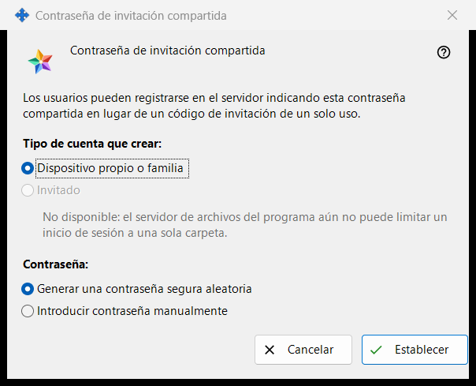
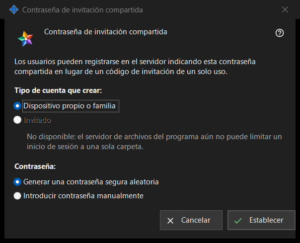

Contraseña de invitación compartida
Para qué sirve
Esta ventana permite a los usuarios registrarse en el servidor con una contraseña compartida en lugar de un código de invitación de un solo uso. Se abre al marcar «Contraseña de invitación compartida» en el grupo «Invitaciones» de los ajustes del servidor de intercambio, o con «Establecer contraseña compartida..» junto a ella.


En este orden
- Elige el tipo de cuenta.
- Elige si el programa genera la contraseña o si la escribes tú.
- Pulsa «Establecer».
- Si la contraseña se generó, cópiala de la ventana que la muestra una sola vez.
- Para dejar de aceptarla, desmarca «Contraseña de invitación compartida» y confirma.
Los elementos
Tipo de cuenta
«Tipo de cuenta que crear:» ofrece «Dispositivo propio o familia» e «Invitado». «Invitado» está desactivado y la línea de debajo da el motivo: el servidor de archivos del programa no puede limitar un usuario a una sola carpeta. Si ya hay una contraseña compartida activada, su tipo actual aparece preseleccionado. Si ese tipo existente es Invitado, «Establecer» está desactivado; la contraseña compartida sí se puede desactivar.
Contraseña
«Contraseña:» ofrece «Generar una contraseña segura aleatoria» (seleccionado de forma predeterminada) e «Introducir contraseña manualmente». Después de «Establecer», la contraseña escrita se pide en una ventana de contraseña que comprueba la política: al menos 10 caracteres con una letra latina mayúscula, una letra latina minúscula y un dígito. Si cancelas esa ventana, vuelves aquí.
Establecer
«Establecer» envía al servidor la contraseña y el tipo de cuenta y activa la contraseña compartida; la página muestra «Contraseña compartida guardada y activada.» y la línea de estado bajo la casilla dice «Contraseña compartida activada (tipo de cuenta: ..).» Una contraseña generada se muestra una sola vez en una ventana propia: cópiala allí, no se puede volver a leer. Cualquiera que conozca la contraseña puede registrar una cuenta del tipo elegido, así que pásala solo a las personas que quieras admitir.
Desactivar
Al desmarcar la casilla se pregunta «¿Desactivar la contraseña de invitación compartida? Los nuevos registros con ella dejarán de ser posibles.» La respuesta predeterminada es No. Tras pulsar Sí, la página muestra «Contraseña compartida desactivada.» y la línea de estado dice «Contraseña compartida desactivada.»
Cancelar
«Cancelar» o Esc cierra la ventana y no cambia nada. Si la abriste al marcar la casilla, la casilla vuelve a su estado anterior.
Ajustes del gestor · Ajustes de uso compartido SFTP · Ajustes del servidor de intercambio